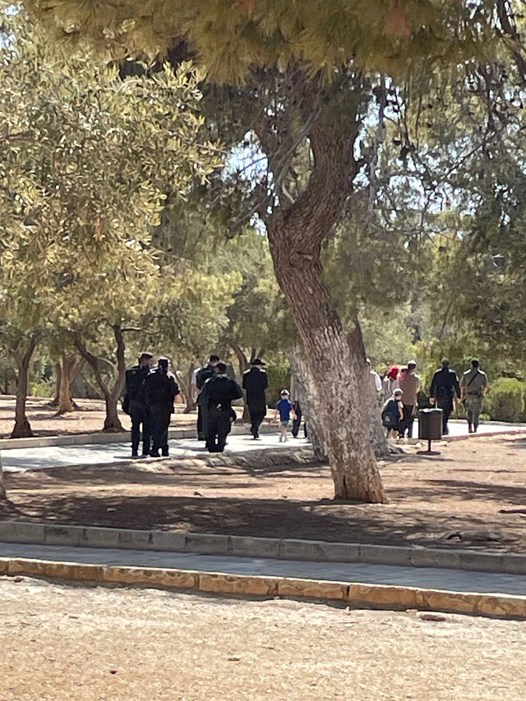

في ثالث أيام «العرش»: 180 مستوطنا يقتحمون الأقصى وإبعاد المصلين عن المصلى القبلي
اقتحامات على فترتين من باب المغاربة بحماية مشددة، وطقوس علنية في الساحة الشرقية، بينما فرضت الشرطة قيودا على أعمار المصلين عند أبواب البلدة القديمة.

باختصار
استخرجه النظام، وراجعه عمر ح.- 180 مستوطنا اقتحموا الأقصى على فترتين حتى العاشرة صباحا، بحسب رصد العاصمة الميداني.
- الشرطة أبعدت المصلين عن محيط المصلى القبلي، وحددت أعمار الداخلين عند ثلاثة أبواب.
- إبعاد 4 حراس من الأوقاف لمدة أسبوع بعد اعتقالهم من الباحات.
بدأت الاقتحامات عند السابعة والنصف صباحا من باب المغاربة، وهو الباب الوحيد الذي تسيطر عليه شرطة الاحتلال بالكامل منذ عام 1967. سارت المجموعة الأولى، ونحو 40 شخصا، في المسار المعتاد نحو الساحة الشرقية، ثم توقفت قرب باب الرحمة لنحو عشرين دقيقة.
قال أحد حراس المسجد للعاصمة إن «الوقوف الطويل في الساحة الشرقية صار هو القاعدة، وليس الاستثناء»، مضيفا أن الشرطة منعت الحراس من الاقتراب لمسافة تقل عن ثلاثين مترا من المجموعات.


المصلون عند الأبواب
عند باب الأسباط وباب حطة وباب المجلس، احتجزت الشرطة هويات شبان تقل أعمارهم عن الأربعين، وطلبت منهم الانتظار خارج الباحات. جلس عشرات منهم على الأرض وأدوا صلاة الضحى في الطريق، في مشهد صار يتكرر في المواسم اليهودية منذ ثلاث سنوات على الأقل.


نحن لا نطلب أكثر من الدخول إلى مسجدنا. كل يوم عيد عندهم يصير يوما نمنع فيه.
الحراس في مركز «القشلة»
اعتقلت الشرطة أربعة من حراس الأوقاف من محيط قبة الصخرة نحو التاسعة، واقتادتهم إلى مركز التحقيق في القشلة قرب باب الخليل. بعد أقل من ساعة، أفرج عنهم بشرط الإبعاد عن المسجد لمدة أسبوع، قابلة للتمديد.
وقالت دائرة الأوقاف الإسلامية في بيان إن ما جرى «اعتداء على صلاحياتها الحصرية»، فيما لم تعلق شرطة الاحتلال على قرارات الإبعاد حتى لحظة نشر هذا الخبر. ومن المتوقع أن تبدأ الفترة الثانية من الاقتحامات بعد صلاة الظهر.
نحدث هذا الخبر مع تطور الأحداث. للمتابعة اللحظية: التغطية المباشرة.
المصادر
- رصد ميداني لمراسلة العاصمة داخل الباحاتمباشر
- حارس في المسجد الأقصى (طلب عدم ذكر اسمه)مقابلة
- بيان دائرة الأوقاف الإسلامية، 28.09.2026وثيقة
- أرشيف العاصمة لأعداد المقتحمين 2025بيانات
كيف أعد هذا الخبر
- مسودة آلية من برقيات المراسلة الميدانية وصور الهاتف.
- دعاء ك. أعادت كتابة الفقرات 1–3 وأضافت الاقتباسات.
- عمر ح. تحقق من الأرقام مقابل الرصد الميداني وعدل العنوان.
- اعتمد ونشر بعد مراجعة رئيس التحرير المناوب.
- تحديث: إضافة قرار إبعاد الحراس وتسلسل الصباح.
لا ننشر أي مادة دون مراجعة محرر. سياستنا في استخدام الذكاء الاصطناعي

نقاش القراء · 2
شكرا على ذكر الأبواب بالأسماء والساعة. هذا ما يحتاجه من هو خارج القدس.
هل هناك رقم مقارن لعدد المصلين الذين منعوا اليوم؟